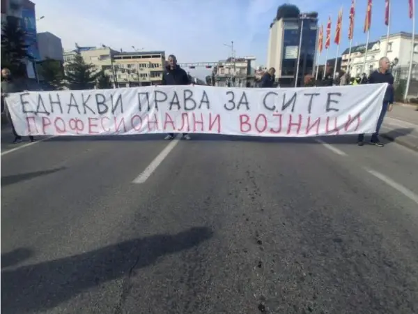
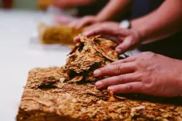
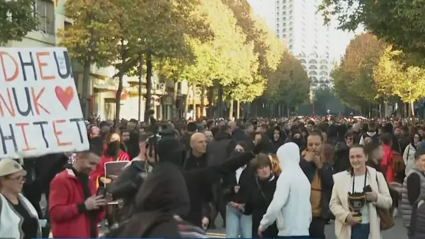
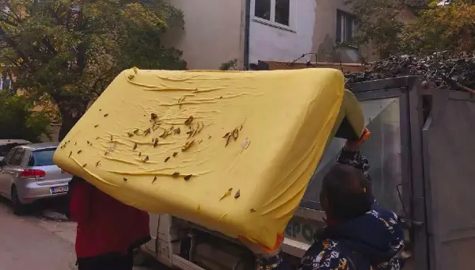
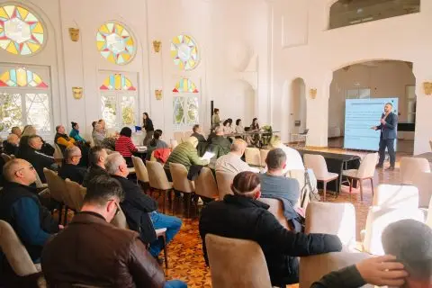
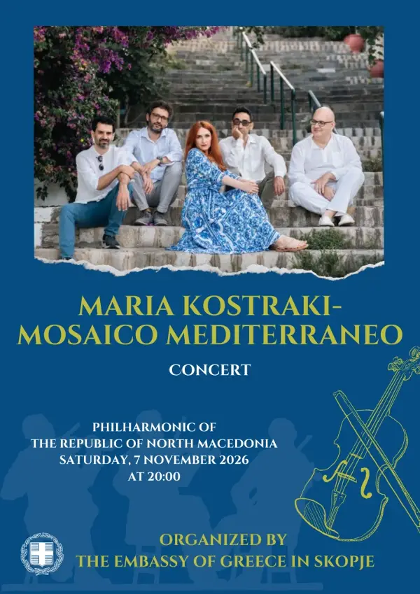
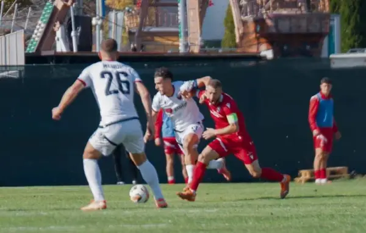
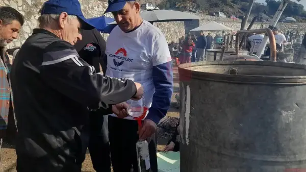

Најнови вести од Македонија и светот
Денеска „АЛТА банка“ АД Битола им изврши исплата на 360 граѓани од Прилеп, Охрид и Ресен
Народната банка продолжува со преземање активности за постепено олеснување на условите за располагање со средствата на клиентите на Алта банка АД Битола, се вели во соопштението...
Раководителка на штедилница во Кавадарци осомничена за проневери и злоупотреби на парични средства од граѓани
Постои основано сомнение дека осомничената, раководителка на филијала на штедилница во Кавадарци, подолг временски период преземала дејствија на измами и злоупотреби на парични ...
Клековски: Системот за рано предупредување за дроги ќе овозможи побрза заштита на здравјето на граѓаните
Формирана е работна група за усогласување на Законот за контрола на опојни дроги и психотропни супстанции со законодавството на ЕУ, а во тек е и склучување работен аранжман со А...
Мицкоски: Продолжуваме со посветена работа на реформите клучни за економскиот развој и подобрување на животниот стандард на граѓаните
Денеска се одржа состанок посветен на Реформската агенда, на кој во фокусот беа тековните активности, приоритетите и динамиката на спроведување на предвидените реформи“, напиша ...
ВМРО-ДПМНЕ: Разликата меѓу Алта банка и Еуростандард е тоа што Заевци ја украдоа банката, а Алта банка е увезен проблем
Народната банка и гувернерот се тие кои носат одлуки за банкарскиот систем, а не премиерот и Владата. Разликата помеѓу Алта банка и Еуростандард е тоа што Заевци ја украдоа банк...

Војниците бараат правда – еднаква отпремнина и договори на неопределено време
Освен тоа и сегашните професионални војници ќе добијат договор на неопределено време и право на пензија“, изјави Александар Насковски од Независниот синдикат на професионални во...
Кузеска: Славески призна дека одлуката за Алта банка ја донел Христијан Мицкоски!
Прво, има признание од Трајко Славески дека одлуката за влез на Алта банка во Македонија ја донел Христијан Мицкоски. Портпаролката и членка на Извршниот одбор на СДСМ, Богданка...
Ангел Анѓушев: За успех на странските пазари не е доволна само добра цена, туку и висок квалитет
Квалитетот, современата технологија, стручниот кадар и ефикасното производство се предуслови за успешен извоз. За да бидат конкурентни на меѓународните пазари, македонските комп...
Николоски: Реализираме реформи за подобрување на транспортот, комуникациите, изградба на автопати, железница
Посветено работиме на реализација на реформскиот процес и развој на државата, зајакнување на економијата и подобрување на квалитетот на живот на сите граѓани – наведува Николоск...

Тутунарите и компаниите се подготвуваат за откупот на тутунот, дел најавуваат дека ќе почнат со вонредниот откуп од 17 ноември
Од 16 ноември е вонредниот откуп на тутунот од годинашнава реколта, а редовниот откуп е од 15 декември. Се очекува од 17 ноември, со вонредниот откуп пунктовите да ги отворат де...

Aлбанската опозиција протестира заедно со студентите
Антивладините протести во Албанија продолжија и денеска, а протестното движење добива дополнителна сила со приклучувањето на приврзаниците на опозициската Демократска партија ко...
Пирц Мусар: Проширувањето на ЕУ кон Западен Балкан е стратешка инвестиција во мирот и безбедноста на Европа
Пирц Мусар повика на поголемо единство во ЕУ со оглед на променливите геополитички околности, порачувајќи им на дипломатите на ЕУ акредитирани во Словенија дека Брисел мора да с...
Црна Гора затвори уште две поглавја во преговорите со ЕУ
Црна Гора денеска затвори уште две поглавја во преговорите за членство во Европската Унија, кои се однесуваат на слободното движење на стоки и на безбедноста на храната, ветерин...
Гласачите во четири американски сојузни држави изгласаа ограничувања за трансродовите малолетници
Демократите беа затекнати неподготвени од нападите на републиканците во врска со прашањата за трансродовите лица за време на претседателската кампања во 2024 година. На завчераш...
Во саудиските напади врз јеменската престолнина загинаа најмалку 22 лица, главно жени и деца
Коалицијата предводена од Саудиска Арабија, која повеќе од една деценија се бори против јеменските бунтовници Хути, засега не го коментираше нападот врз Сана. Најмалку 22 лица, ...
Иран се закани со ново оружје
Иран нема да попушти под притисоците од Вашингтон и нема да прифати каква било форма на принуда од САД, порача Сејед Зијаедин Агаџанпур, раководител на Организацијата за идеолош...

Општина Аеродром: 400 тони отпад транспортирани во „Дрисла“ за само два месеца
Екипите на ЈП за комунални дејности на Општина Аеродром секојдневно се на терен, отстранувајќи кабаст отпад, градежен шут и отпад од дивите депонии и јавните површини. Општина А...
Со богослужби и свечена академија ќе бидат одбележани 130 години од храмот „Свети Димитриј“
Со свечени богослужби и академија, денеска и утре ќе бидат одбележани празникот посветен на светиот великомаченик Димитриј и 130-годишнината од изградбата на храмот „Свети велик...
Посебен сообраќаен режим кон градските гробишта поради Задушница
Поради одбележувањето на верскиот празник Задушница, денеска во Скопје е воведен посебен режим на сообраќај на улиците што водат кон градските гробишта, информира Министерството...
СО БАСТУНИ, ПЕНЗИОНЕРИ ОД ПРИЛЕП ПАТУВАА СО АВТОБУС ДО БИТОЛА ЗА ДА СИ ГИ ПОДИГНАТ ПЕНЗИИТЕ ОД „АЛТА БАНКА“
Пред експозитурата на „Алта банка“ во Битола денеска пристигнаа автобуси со пензионери и приматели на социјална помош од Прилеп, кои […].
пред 6 часа
Верица Спасевска со нова монографија за храмот во Барешани
По повод големиот христијански празник посветен на Свети Димитриј Солунски, битолската авторка Верица Спасевска ја издаде својата најнова публикација, посветена на храмот „Св.
пред 8 часа

Битолчани со свои предлози ги утврдуваат приоритетите за општинскиот буџет
Жителите на Општина Битола активно се вклучуваат во креирањето на општинскиот буџет за 2027 година.
пред 25 часа
Радовишанец се заканувал по телефон на вработени во странска амбасада
Според информациите од МВР, на 4 ноември 2026 година, пријавениот телефонски се јавил во амбасада на странска држава во Македонија и на странски јазик упатил сериозни закани кон...
МВР: 17 лица уапсени во изминатото деноноќие поради безобѕирно управување со моторно возило
Р. од село Мусинци, општина Могила, управувал возило без положен возачки испит и под дејство на алкохол, при што му биле измерени 2,92 промили алкохол во крвта. МВР соопшти дека...
Маж пронајден починат на улица во Гостивар, телото дадено на обдукција
Според информациите од полицијата, на 6 ноември, околу 19:50 часот, Итната медицинска помош од Гостивар пријавила во СВР Тетово дека добила повик за укажување лекарска помош на ...
Вечерва „Трибјут Фест 2″ со хитови на Linkin Park, Green Day и Nirvana во МКЦ
Љубителите на рок-музиката денеска на 7 ноември ќе имаат можност да уживаат во второто издание на „Трибјут Фест”, кое ќе се одржи во Младинскиот културен центар (МКЦ) во Скопје,...

Концерт на грчкиот ансамбл „Mosaico Mediterraneo“ со сопранистката Марија Костраки во Филхармонија
Во Филхармонијата вечер од 20 часот концерт ќе одржи грчкиот ансамбл „Mosaico Mediterraneo“ со сопранистката Марија Костраки. Настанот го организира Амбасадата на Грција, која с...
Трилерот со Бен Афлек собори рекорд на Нетфликс: Четири недели е најгледан филм во светот
Енималс“ пристигна на Нетфликс во октомври, а уште во првата недела го освои првото место со 23,8 милиони прегледи.
пред 43 минути
НАСА го претстави експерименталниот авион X-70 Fractal: Новата летачка лабораторија ќе тестира напредни технологии
обезбедува на НАСА напредна платформа со екипаж за тестирање на современи системи за управување, маневрирање и други врвни технологии во реални услови на лет“, изјави директорот...
пред 57 минути
„Сајбернападот врз супермаркетите беше само вовед во хаос“: Полскиот вицепремиер предупредува дека вештачката интелигенција отвора нова студена војна
Порастот на сајбернападите засновани на вештачка интелигенција бара од Европа да изгради систем на одвраќање сличен на оној што спречи меѓусебно уништување на Соединетите Америк...
пред 1 час
Apple изненади со одлука: Се спои со кинески гигант, нова функција пристигнува на телефоните
Корисниците и програмерите во Кина конечно добиваат пристап до паметни функции, иако со едно клучно прилагодување за да се усогласат со локалните закони, а преку партнерство со ...
пред 35 минути
(ВИДЕО+ФОТО) Дорис Ди на годинешниот„Макфест“ се претстави со „Не,не,не“ и остави моќен впечаток
Песната Не, Не, Не за Дорис Ди ја напиша Андијана Јаневска која воедно е и нејзина менторка….
пред 2 часа
(ФОТО) Стојан Троицки доби НАГРАДА ЗА ЖИВОТНО ДЕЛО од градот Штип
Макфест“ Штип, фестивал на забавни мелодии, фален и куден опстојува повеќе од 40 години,а јас ја посакувам неговата долговечност.
пред 2 часа
Аланис Морисет откри дека е пансексуална: Пејачката изненади со искрено признание во популарен поткаст
Канадската рок-ѕвезда Аланис Морисет (52), позната по светските хитови „Ironic“ и „You Oughta Know“, за првпат јавно проговори за својата сексуална ориентација.
пред 39 минути
Светскиот шампион Марко Џорлев: Каратето учи на дисциплина, на меѓусебна почит и нè прави подобри личности
Светскиот шампион во карате, Марко Џорлев е средношколец во Гимназијата „Славчо Стојменски“-Штип вели дека каратето го учи на дисциплина и ред. Тука се и моите тренери како голе...

(Видео) Струга ја победи Шкендија, Вардар славеше кај Силекс
Струга ја победи Шкендија, а Вардар во Кратово го совладса Силекс. Натпреварот во Струга го реши Малески во 72-та минута. На стадионот во Кратово, Вардар добрата игра во финишот...
(Видео) Окафор му пресуди на Тотенхем
Иако Тотенхем имаше поголем посед на топката, тимот на Лидс имаше дури четири одлични шанси, а успеаја да искористат само една преку Ноа Окафор. Фудбалерите на Лидс го победија ...
Мамуте до неодамна имаше 310 килограми и не можеше да оди, сега ќе трча маратон (ВИДЕО)
Мојот маратон е личен: започна со 310 килограми во кревет, а ќе заврши кога ќе паднам под 100.
пред 25 минути
Кога со бојлерот нешто не е во ред, ова се знаците
Прекинувачот на бојлерот се загрева Ова е знак што никогаш не треба да се игнорира.
пред 32 минути

Вистинските мајстори на ракијата се во Валандово
Со домашно валандовско грозје одлежано дваесеттина дена, според постапката за варење, учесниците го почнаа процесот на создавање на познатата домашна ракија.
пред 1 час
ВЕЧЕРНОТО ШОУ НА БОГДАН ИЛИЕВСКИ (06.11.2026)
ВЕЧЕРНОТО ШОУ НА БОГДАН ИЛИЕВСКИ (06.11.2026)
Nov 06, 2026
Саботажа сезона 13 бр. 16
Саботажа сезона 13 бр. 16
Nov 05, 2026
Бог да чува човеков...
Бог да чува човеков...
Nov 05, 2026
Еден човек ја спасува Амазон
Еден човек ја спасува Амазон
Nov 05, 2026
Топ тема: Ќе ја купи ли некој Алта банка Битола?
Топ тема: Ќе ја купи ли некој Алта банка Битола?
Nov 02, 2026